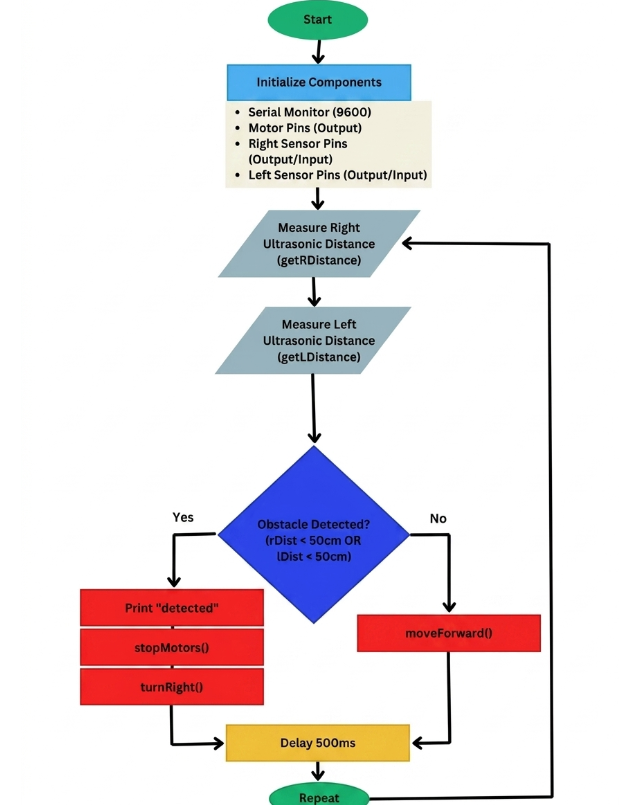
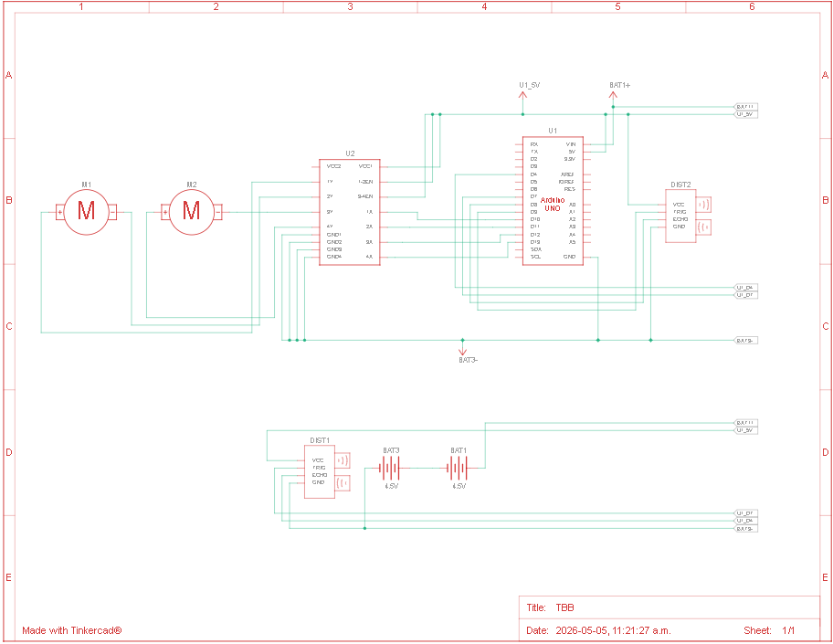
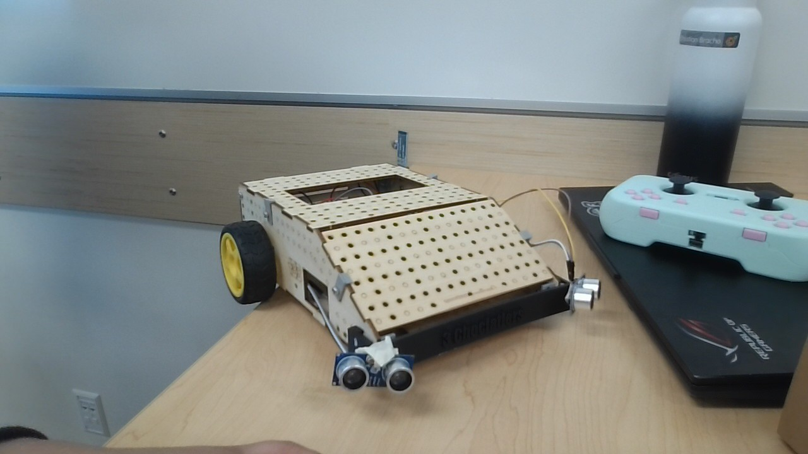

Flowchart

Electrical Schematic
const int RTrigPin = 7; // Right Ultrasonic sensor trigger
const int REchoPin = 4; // Right Ultrasonic sensor echo
const int LTrigPin = 9; // Ultrasonic sensor trigger
const int LEchoPin = 8; //Left Ultrasonic sensor echo
const int in1 = 3; // Left motor direction pin 1
const int in2 = 5; // Left Motor direction pin 2
const int in3 = 6; // Right Motor direction pin 1
const int in4 = 11; // Right Motor direction pin 2
const int obstacleDistance = 50; //detect distance for turning
float right_duration, right_distance, left_duration, left_distance; //variables for ultrasonic sensor function
// --- Setup ---
void setup() {
Serial.begin(9600); //initialize serial monitor at 9600 rate
pinMode(in1, OUTPUT); //left motor pin 1 initialize
pinMode(in2, OUTPUT); //left motor pin 2 initialize
pinMode(in3, OUTPUT); //Right motor pin 1 initialize
pinMode(in4, OUTPUT); //Right motor pin 2 initialize
pinMode(RTrigPin, OUTPUT); //Right ultrasonic trig pin intialize
pinMode(REchoPin, INPUT); //Right ultrasonic echo pin initialize
pinMode(LTrigPin, OUTPUT); //Left ultrasonic trig pin initialize
pinMode(LEchoPin, INPUT);*/ //Left ultrasonic echo pin initialize
}
// --- Main Loop ---
void loop() {
int lDistance = getLDistance(); //get the distance from left ultrasonic sensor
int rDistance = getRDistance(); //get distance from right ultrasonic sensor
if (lDistance < obstacleDistance) || (rDistance < obstacleDistance){ //check if measured distance is under minimum distance threshold
Serial.println("detected");
stopMotors(); //stop movement
delay(300); //wait 300 ms
turnRight(); //turn right
delay(500); //wait 500 ms
} else {
moveForward(); //if above threshold, keep moving
}
}
int getRDistance() { //right ultrasonice sensor distance function
// Send ultrasonic pulse
digitalWrite(RTrigPin, LOW); //set low to ensure it starts low
delayMicroseconds(2); //wait 2 microseconds
digitalWrite(RTrigPin, HIGH); //send out pulse from sensor
delayMicroseconds(10); //wait 10 microseconds
digitalWrite(RTrigPin, LOW); //set back to low for next cycle
right_duration = pulseIn(REchoPin, HIGH); //set variable to pulse data
right_distance = (duration*.0343)/2; // convert to cm
Serial.print("Right Distance: "); //print right distance words
Serial.println(right_distance); //print distance
delay(100); //wait 100 ms
return right_distance; //return right distance in cm
}
int getRDistance() { //left ultrasonice sensor distance function
// Send ultrasonic pulse
digitalWrite(LTrigPin, LOW); //set low to ensure it starts low
delayMicroseconds(2); //wait 2 microseconds
digitalWrite(LTrigPin, HIGH); //send out pulse from sensor
delayMicroseconds(10); //wait 10 microseconds
digitalWrite(LTrigPin, LOW); //set back to low for next cycle
left_duration = pulseIn(LEchoPin, HIGH); //set variable to pulse data
left_distance = (duration*.0343)/2; // convert to cm
Serial.print("Left Distance: "); //print distance word
Serial.println(left_distance); //print distance
delay(100); //wait 100 ms
return left_distance; //return distance in cm
}
void moveForward() { //move forward function
digitalWrite(in1, HIGH); //left motor spin forwards
digitalWrite(in2, LOW); //left motor no backwards spin
digitalWrite(in3, HIGH); //right motor spin forwards
digitalWrite(in4, LOW); //right motor no backwards spin
}
void stopMotors() { //stop motors function
digitalWrite(in1, LOW); //left motor no forward spin
digitalWrite(in2, HIGH); //left motor backwards spin
digitalWrite(in3, LOW); //right motor no forward spin
digitalWrite(in4, HIGH); //right motor backwards spin
}
void turnRight() { //turn right function
digitalWrite(in1, HIGH); //left motor spin forwards
digitalWrite(in2, LOW); //left motor no backwards spin
digitalWrite(in3, LOW); //right motor no forward spin
digitalWrite(in4, HIGH); //right motor backwards spin
}
Commented Code
Our unique addition to our robot was a custom front bumper plate with our team name on it. It served as a multifunctional piece, providing both a decorative element and a practical function by creating a mounting platform for our ultrasonic sensors. This design choice allowed us to effectively complete the task assigned with ease.

Final Robot Picture With Sensors
Components Used
One thing that could be improved with out robot is the consistency of our ultrasonic sensor readings. We found that our sensors would often give us inconsistent distance readings, which made it difficult to program the robot to react to obstacles in a consistent way. This could be improved by refining the values used for coding our sensors to ensure more consistent readings. We would also like to fine tune the movement of our robot wheneverit detects an obstacle to make it perfectly sure that it does not hit a wall under any circumstance. This would make our attempts more consistent with a smaller risk of failure by taking better, smoother turns.